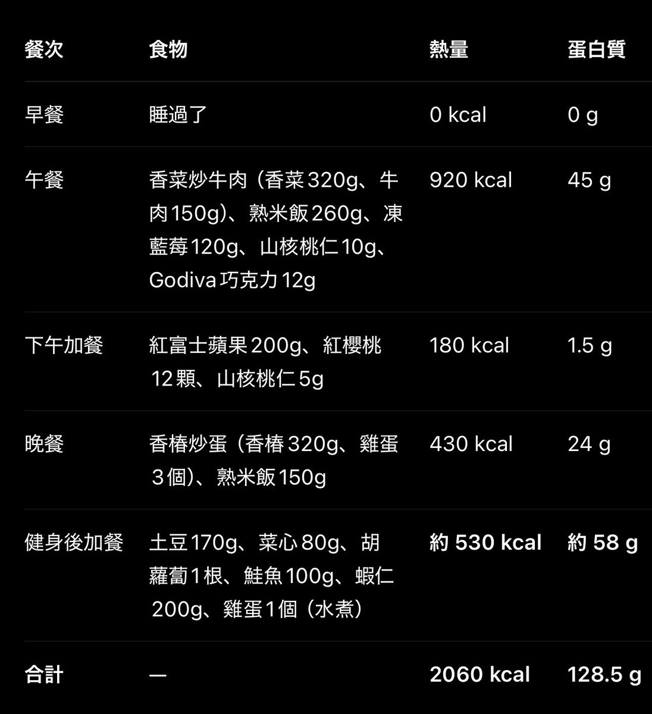

洛铃🦊Magic Caster 和另外 114514 人
@LolingVerse
@efubiku 突然想要吃炒牛肉😋

Fv.ik
@efubiku
很多人可能不知道天然食物能量有多低。
就这么说吧，我刷掉 50 斤体重的过程里每天不算水，吃的食物都在 5 斤以上的（下馆子日除外）。
以今天为例，因为比较忙我甚至还亏空了一些，如果需要抹平总消耗我需要再吃一遍晚饭，接近 7 斤。
而 10 块黄油曲奇能量就轻松超过了这五斤食物… https://t.co/FmUEo22S7m